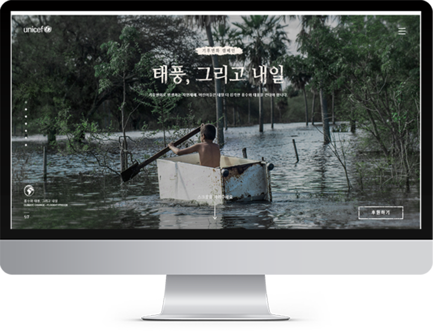
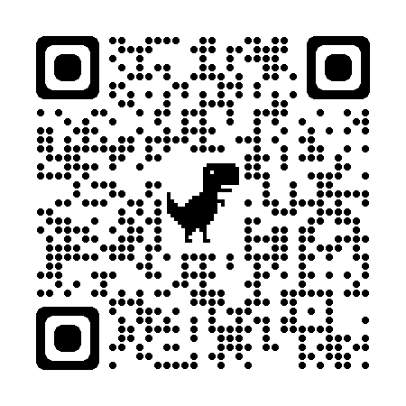
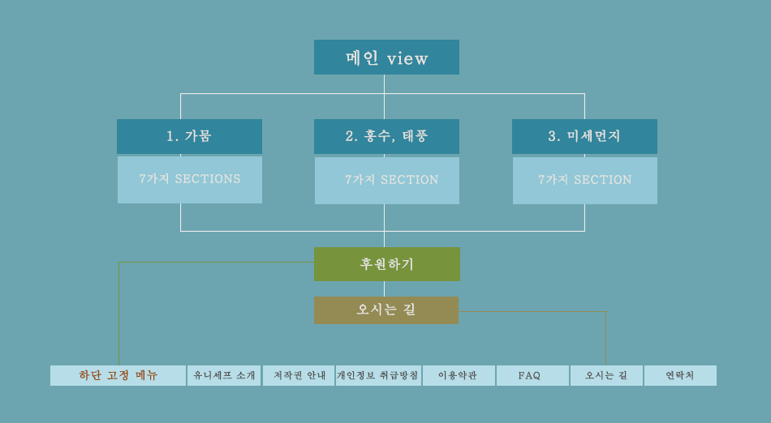
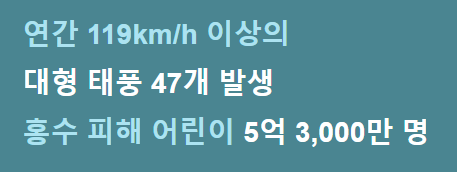
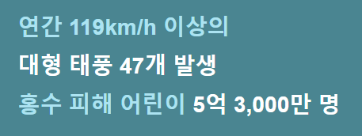

02. unicef clone 웹사이트
| 프로그램 사용 비율 (Skill) | |
|---|---|
| HTML | → 40% |
| SCSS | → 30% |
| JAVASCRIPT | → 15% |
| jQuery | → 10% |
| PHOHOSHOP | → 5% |
| URL |
|---|
| https://gpqls92.github.io/unicef/ |
| QR code |
|---|
|  |
PLANNING
유니세프 기후변화 캠페인 리뉴얼 (웹)
제작기간 : 2021.08.06 ~ 08.25
기여도 : 100%
Information Architecture
| Target |
|---|
| 유니세프는 어린이를 위한 유엔 기구 사이트 |
| Theme1 : 가뭄 |
| Theme2 : 홍수 태풍 |
| Theme3 : 미세먼지 |
| 후원하기 → 오시는 길 |
| Concept |
|---|
|
유니세프는 전 세계 어린이를 위해 일하는 유엔 기구이며, 유엔 본부를 포함한 유엔 산하 기구들은 대부분 ‘파란색’ 로고를 사용합니다. |
| Design Concept | ||
|---|---|---|
| color #01ADEF |
#9CC6D1 |
 #FFFFFF #FFFFFF
|
font sans-serif

sans-serif

|


MAKE
| Theme1 page |
|---|
| 가뭄 |
| Theme2 page |
|---|
| 홍수, 태풍 |
| Theme page |
|---|
| 미세먼지 |
| 7개의 SECTIONS |
|---|
|
고정: 버거메뉴, 후원하기, 페이지수, 인디게이터, 로고 스크롤 및 클릭을 이용한 페이지 변화 여러개의 이미지를 넣어야하는 section의 경우 (keyframe 적용) 동영상을 통한 캠페인의 취지를 표현 |


MAKE
| Sub page |
|---|
| 후원하기 → 개인 정보 입력 주민번호 체크를 클릭하여 동의 비동의로 확인 카카오 우편번호 서비스를 이용해 우편 검색 약관 및 정보 동의 클릭과 상세보기도 클릭 유니세프의 포인트 컬러 적용 페이지 |
| JAVASCRIPT와 jQuery 이용 |
|---|
|
정규식과 테이블 폼을 이용 주민번호체크, 카카오 우편번호 서비스, 상세보기가 되도록 작성 |
| Responsive web design |
|---|
| PC version 1440px ~ |


MAKE
| 오시는 길 page |
|---|
| 지도를 통해 위치 정보 얻음 마우스 커서의 모양으로 포인트 잡음 유니세프의 포인트 컬러 적용 페이지 |
| Responsive web design |
|---|
| PC version 1440px ~ |